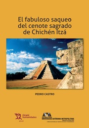

- Inicio
- Publicaciones
- Álvaro Obregón fuego y cenizas de la Revolución Mexicana
- Adolfo de la Huerta El desconocido de Roberto Guzmán Esparza
- A la Sombra de un Caudillovida y muerte del general Francisco R. Serrano
- Soto y Gamagenio y figura
- Adolfo de la Huerta Serie Grandes Protagonistas de la Historia Mexicana
- Historia del Agrarismo en México
- Ciudad Cuauhtémoc, Chihuahuacrónica de su fundación
- Adolfo de la Huerta: la integridad como arma de la revolución
- Adolfo de la Huerta y la Revolución Mexicana
- Fronteras Abiertasgeopolítica y expansionismo en Brasil contemporáneo
- Currículum

ISBN-13:978-8416786329
ASIN:8416786321
Editorial: Universidad Autónoma Metropolitana Iztapalapa-Tirant lo Blanch, 2016.
El fabuloso saqueo del cenote sagrado de Chichén Itzá
Este libro trata sobre las exploraciones depredadoras del cónsul norteamericano Edward H. Thompson en Yucatán, especialmente el Cenote Sagrado de Chichén Itzá, desde fines del siglo XIX y primeros años del XX, bajo el patrocinio del Museo Peabody de La Universidad de Harvard. Thompson se instaló en México como un ciudadano que pronto tuvo la cobertura consular que le sirvió como a otros tantos en el país como en otros lugares. A pesar de todo lo que se pudiera pensar, tuvo sumo cuidado en el ejercicio de su cargo para evitar cualquier sospecha o acusación de contrabandista sostenido por un puesto en el servicio exterior de su país. A pesar de la precariedad de los controles y en general de la responsabilidad federal, estatal y local, Thompson se abstuvo de provocar a sus anfitriones, y el éxito de su trabajo se vio en la adquisición de cuarenta años de miles de piezas de diversos materiales sin ser molestado. Este personaje fue uno de los destacados de la “arqueología salvaje”, es decir, realizado en individuo depredador, destructivo, acientífico; en resumen, el aventurero en busca de tesoros, aunque comprendió con el tiempo el valor de las reliquias antiguas distintas del oro, y proporcionó materiales para los especialistas. Es imposible conocer el ritmo y celeridad de su saqueo, a pesar de su copiosa y ordenada correspondencia, suficiente para generar una obra diferente que dé cuenta de detalles tan importantes como los objetos y sus circunstancias. El éxito de esta aventura se evidencia en la salida ilegal de alrededor de 30.000 piezas arqueológicas de diversos materiales. Los objetos del Cenote Sagrado, como de otros sitios arqueológicos de México, son un botín considerable y cuyos daños lógicamente son imposibles de reparar. El otro significado está relacionado con el valor simbólico otorgado al Cenote desde 1926, como expresión de la doctrina de la Revolución Mexicana que tuvo en un lugar eminente los reclamos de los indígenas. Dicho plan comenzó con la exaltación de sus “glorias pasadas”, y nada mejor que los vestigios de sus civilizaciones perdidas. Se comprende claramente el estrecho vínculo entre el indigenismo y el rescate arqueológico, como unidad a considerar en el programa reformista emprendido al final de la lucha armada. La depredación de las zonas arqueológicas de México tuvo, por supuesto, una capitulación enciclopédica en los siglos XIX y XX, pero el caso del Cenote tuvo ingredientes novelescos, debido a la personalidad de Thompson y a las fantasías de incalculables riquezas que se tejían sobre él, con la ayuda de libros y periódicos de Estados Unidos y México. La exposición mediática no le dejó otra alternativa al gobierno mexicano que actuar al respecto, y con mucha imaginación decidió capitalizar políticamente lo que sus intereses acordaban. El gobierno del presidente mexicano Plutarco Elías Calles (1924-1928) presentó cargos penales y civiles contra el estadounidense. La acusación formal de contrabando que recibió Thompson en 1926 tuvo el aplauso de los mexicanos, porque al menos se tomaron medidas contra la depredación arqueológica. Desde entonces, el Cenote ha adquirido el valor emblemático del despojo inaceptable y una afrenta a los sentimientos nacionales. Desafortunadamente, pero años después, la Corte Suprema de Justicia de México decidió proteger la sucesión de Thompson, dejando impune un ataque Al patrimonio cultural de todo un país. Este libro da cuenta de las actividades del aventurero Thompson, del patrocinio del Museo Peabody de la Universidad de Harvard y de los fallidos esfuerzos de las autoridades mexicanas para lograr el regreso de las piezas al país. Hasta el día de hoy, se mantiene la actitud reticente de las autoridades del museo de encontrar alguna fórmula razonable para remediar el mal de origen que significó el saqueo indiscriminado llevado a cabo por Thompson. La devolución de las piezas a su país de origen sería la situación más deseada y justa, en un acto de buena voluntad y amistad.
Réplicas y consultas con el autor: pedrocastro3131@gmail.com
Índice
- Thompson, su llegada a México y primeros trabajos
- Chichén Itzá, el Cenote Sagrado y sus imaginarios
- Una hacienda caída del cielo maya
- Una draga en el bosque tropical
- Más secretos de la draga
- Santiago Bolio y la visita de Justo Sierra
- El cónsul pierde su puesto y continúa en el Cenote
- El excónsul es ahora “arqueólogo” de tiempo completo
- Un incendio en la plantación
- La apropiación simbólica del Estado posrevolucionario
- El proceso civil y penal contra Thompson
- Defensa y amparo federal para Thompson
Introducción
- Epílogo
- Anexo
- Fotografías e imágenes
- Bibliografía
- Índice analítico
Reseñas y Comentarios
“El Cenote Sagrado de Chichén Itzá: crónica de un patrimonio perdido”. Fuentes Humanísticas, Septiembre del 2018
Sergio Cedillo Fernández